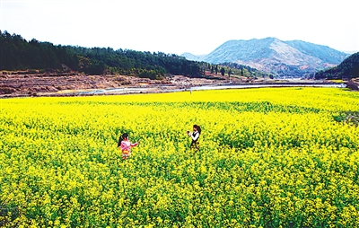

中国传统村落-岚谷乡
国家普通级旅游景区
开放时间：全天开放
景点介绍
村落属性：行政村
所 在 地：武夷山市岚谷乡
始建年代：明代
代表性建筑：彭米贵民居,清代;王全生民居,清代;陈发汉民居,清代;岚兴庵,清代;福兴庙,清代;

县级：“岚谷熏鹅”制作技艺,“岚 谷水豆腐”制作技艺 ,竹制品编织技 艺;
村庄简介：
沿水筑厝而居风貌古朴。 岚头村位于武夷山市岚谷乡西面，距武夷山市区 45 公里，距岚 谷乡政府 5 公里，东连横墩村，南 与吴屯乡上村村相连，西接小浑 村，北连江西嬿子凹,是个偏僻的小 山村，属省定老区基点村。村域面 积 13.1 平方公里，村庄占地面积 110 亩。 岚头村风貌独特，地理环 境优越，群山环抱，山水交融，四 季如春，属中亚热带气候，其点是 春季干旱多风，夏季雨量集中。